Architecture of the Atmel ATmega 328 Microcontroller#

Lecture Topics#

Introducing the Atmel ATmega 328 MCU#
In Introduction to Microcontrollers and Microcontroller Architecture we described what a microcontroller is and looked at how one can be described by considering its architecture. We finished the lecture looking at Fig. 18 which provides an overview of the AVR core architecture and we introduced the general purpose registers and the ALU.
{kind=link}
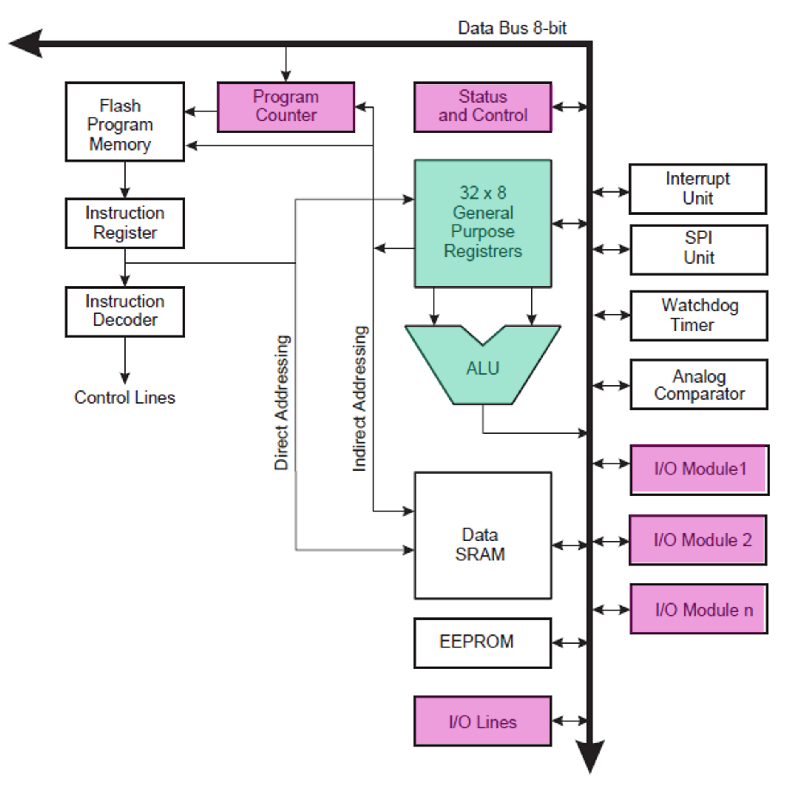
Fig. 18 The architecture of the Atmel ATMega328 Microcontroller#
This is an 8-bit CMOS microcontroller based on the AVR enhanced RISC architecture with 131 instructions
It has 2KB of Internal SRAM, 32 KB of Flash Memory and 1 KB of EEPROM
It has 32 General Purpose Registers
It can achieve up to 20 MIPS at 20 MHz (maximum clock frequency)
There are 8 Analog I/O Pins connected to 10-bit ADC
There are 22 Digital I/O Pins (6 capable of PWM)
The AVR core uses a Harvard memory architecture – with separate memories and buses for program and data.
The Status Register#

wallpaper.dog/microcontroller-wallpapers
What is The status register?#
An 8-bit register containing flags that contain information about the result of the most recently executed instruction and the current state of the processor (Fig. 19).
The status register is updated after all ALU instructions as specified by the instruction set reference.
{kind=link}
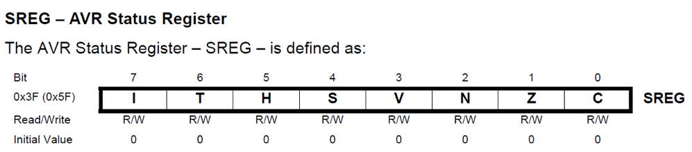
Fig. 19 SREG - The AVR Status Register#
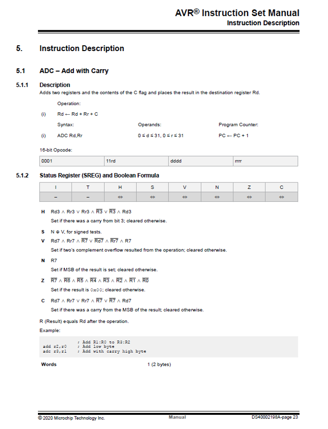
Fig. 20 Example instruction showing how the status register is affected#
Status Register Flags#
Bit 0 - Carry Flag (C): |
The carry flag is set when the execution of the previous arithmetic or logic instruction produced a carry out of bit-7 or required a borrow |
Bit 1 – Zero Flag (Z): |
The zero flag is set when the result of the previous arithmetic or logic instruction resulted in a zero |
Bit 2 – Negative Flag (N): |
The negative flag is set when the result of the previous arithmetic or logic instruction is negative |
Bit 3 – Two’s Complement Overflow Flag (V): |
The Two’s Complement Overflow Flag V supports two’s complement arithmetic. +ve + +ve = -ve or -ve + -ve = +ve |
Bit 4 – Sign Bit (S): |
The S-bit is always an exclusive or between the Negative Flag and the Two’s Complement Overflow Flag. |
Bit 5 – Half Carry Flag (H): |
The half carry flag is set when the execution of the previous arithmetic or logic instruction produced a carry out of bit-3 or required a borrow from bit-4. |
Bit 6 – Bit Copy Storage (T): |
A bit from a register in the Register File can be copied into T by the BST instruction, and a bit in T can be copied into a bit in a register in the Register File by the BLD instruction. |
Bit 7 – Global Interrupt Enable (I): |
The Global Interrupt Enable bit is set to enable interrupts. The individual interrupt enable control is then performed in separate control registers. |
Status Register Example#
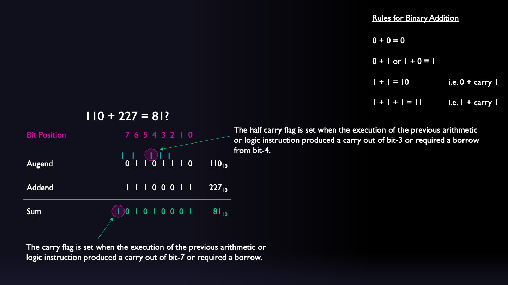
Status Register Demonstration#
Code to be executed
LDI R16, Addend
LDI rR17, Augend
ADD R16, R17
{kind=link}
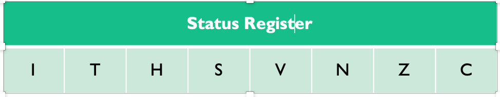
Record status of SREG at line 3.
Examples#
The program counter#
wallpaper.dog/microcontroller-wallpapers
What is The Program Counter?#
A program is a sequence of instructions written in a particular order to perform a specific task
The instructions of the program are stored sequentially in non-volatile memory.
The program counter is a register which holds the address of the next instruction to be executed
Example of a program#
Fig. 21 illustrates a simple program to add two numbers.
{kind=link}
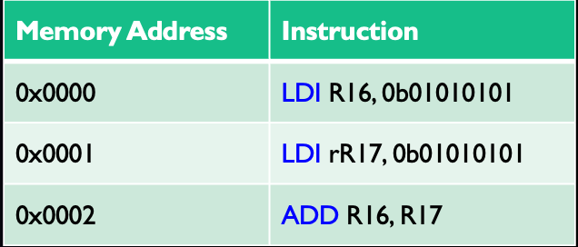
Fig. 21 An example programme showing three instructions located at memory locations 0 through 2.#
It is written in assembly code for the Atmel ATmega328 MCU. Each instruction is a programmer-friendly rendition of an 16- or 32-bit binary code that is stored at the memory locations shown.
Organisation of program memory#
The ATmega328 microcontroller has a 32 Kbyte flash memory which is organised into 256 pages each containing 64 Words of program.
The program counter is 14-bits and can access each of these memory locations
0x0000–0x3FFE
The remaining addresses
0x3FFF–0x7FA5(the boot flash section) are reserved for the bootloader
Fig. 22 illustrates the organisation of the program memory for the ATmega328.
{kind=link}
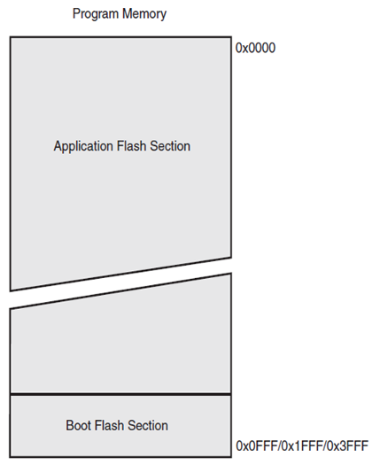
Fig. 22 The program memory of the ATmega328 microcontroller#
Remember a word is 16 bits
64 (words) = 128 bytes
256 (pages) each of 128 bytes = 32 KB (or decimal 32768 / binary 32678)
Fig. 23 shows how the program counter is used to access the next instruction.
{kind=link}
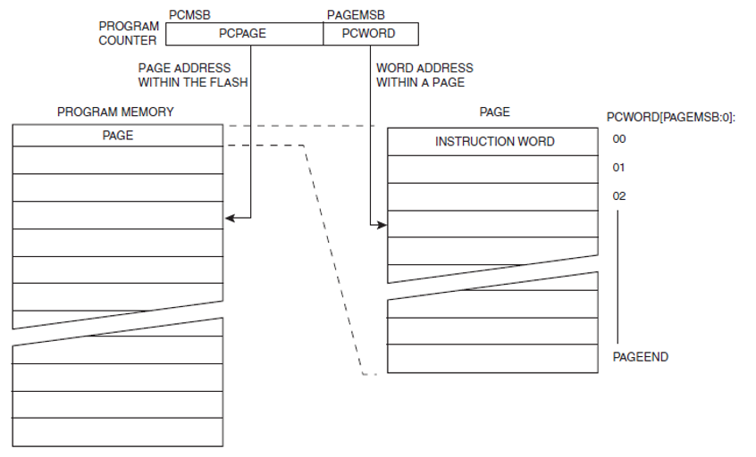
Fig. 23 How the program counter is used to access instructions within the available pages of program memory.#
The Least significant six bits address the instruction words within a given page. Note: \(2^6 = 64\) words which is \(128\) bytes.
The 8 most significant bits address the page in programme memory in which the instruction word is to be found. Note: \(2^8 = 256\) and that \(256 \times 64 \times 2 = 32,768\) bytes.
The Bootloader#
In short, microcontrollers are usually programmed through a programmer (specialist piece of hardware) unless you have a piece of firmware in your microcontroller that allows installing new firmware without the need of an external programmer. This small piece of firmware is called a bootloader and can allow the program to be rewritten by the microcontroller itself e.g. via an over-the-air (OTA) updates.
The bootloader also contains the reset routine (power-on-reset)
During reset, all I/O Registers are set to their initial values, and the program starts execution from the Reset Vector. For the ATmega168A/168PA/328/328P family of microcontrollers, the instruction placed at the Reset Vector must be a JMP – Absolute Jump – instruction to the reset handling routine.
Program Counter Demonstration#
The Stack Pointer#
wallpaper.dog/microcontroller-wallpapers
The Stack#
In a microcontroller, the ‘stack’ is a space in memory with a fixed origin and a variable size that can be used for temporary storage purposes, such as storing local variables and saving return address for subroutine calls and interrupts.
The stack supports two types of operations:
Push – a data item is placed at the location pointed to by the stack pointer
Pop or Pull – a data item at the current location pointed to by the stack pointer is removed.
The stack typically operates as a “Last In First Out” (LIFO) buffer
What is the stack pointer?#
The stack pointer register keeps track of the top of the stack.
A stack
PUSHcommand will decrement the stack pointer.
A stack
POPcommand will increment the stack pointer.
The AVR stack pointer is implemented as two 8-bit registers in the I/O space.
The are called SPH (stack pointer high byte) and SPL (stack pointer low byte) as illustrated in Fig. 24.
{kind=link}
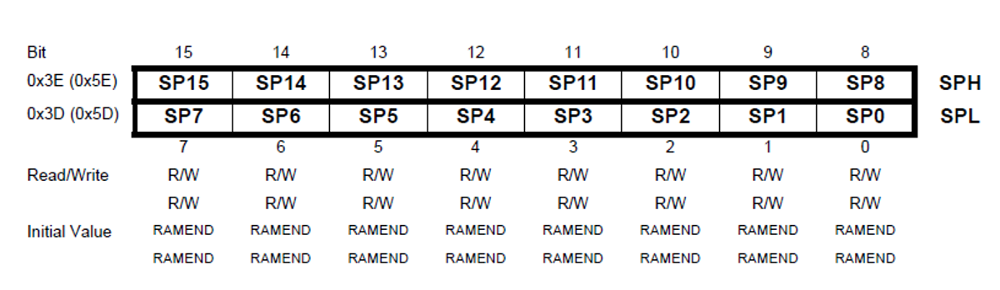
Fig. 24 The AVR stack pointer implemented as two bytes SPH and SPL.#
Fig. 25 illustrates the operation of the stack pointer as it appears to the user of the stack.
{kind=link}
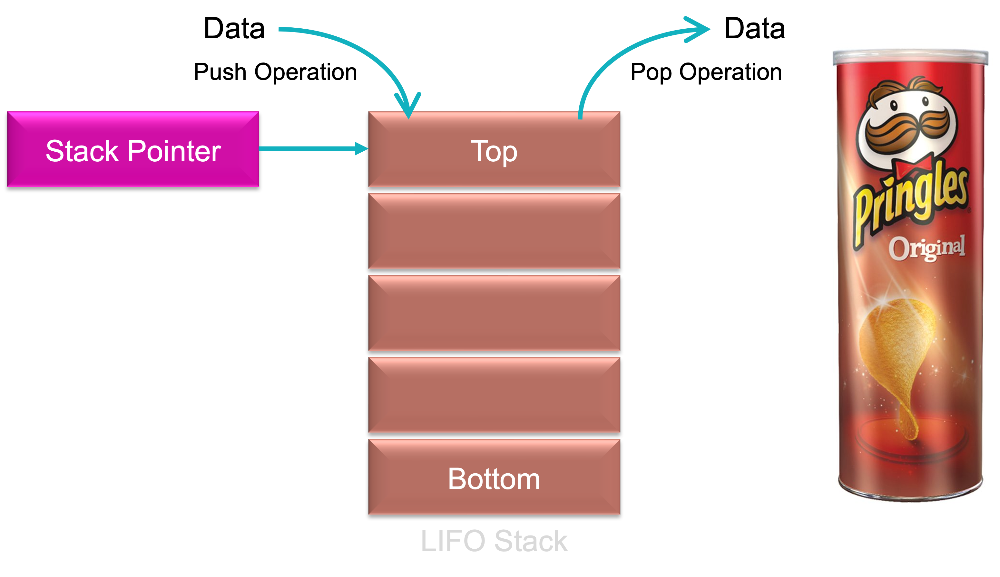
Fig. 25 Illustration of the operation of a stack.#
Like a box of Pringles, when you pop an item of the stack, it comes from the top. The pringle below the one you have just taken off becomes the new top. If you were to put the Pringle back, it becomes the new top. When the pringles box is empty, there is nothing on the stack and the stack pointer will be pointing at the memory address of the bottom of the stack.
Introduction to Microcontroller I/O#
{kind=link}
wallpaper.dog/microcontroller-wallpapers)
I/O on the ATmega328#
Fig. 26 illustrates the layout of the input-output (I/O) pins of the Atmel ATmega328 packaged as an Arduino Nano that you will be using in the lab and project.
{kind=link}
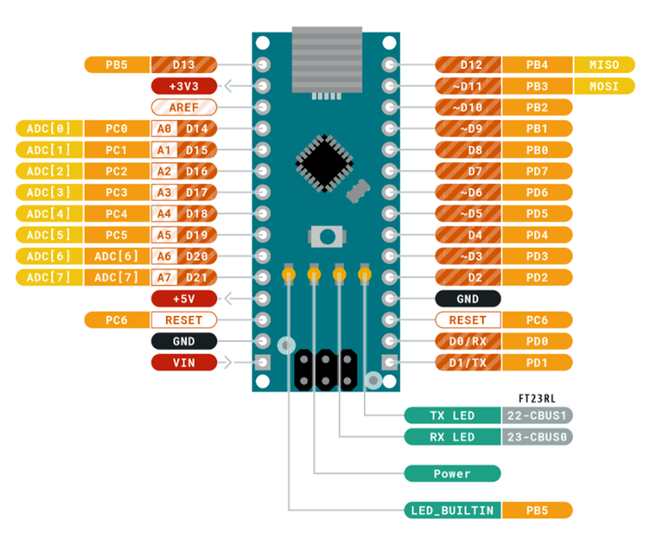
Fig. 26 Input/output pins for the Arduino nano#
Fig. 27 is the schematic diagram of the Atmel ATmega328 reproduced from the reference manual.
{kind=link}
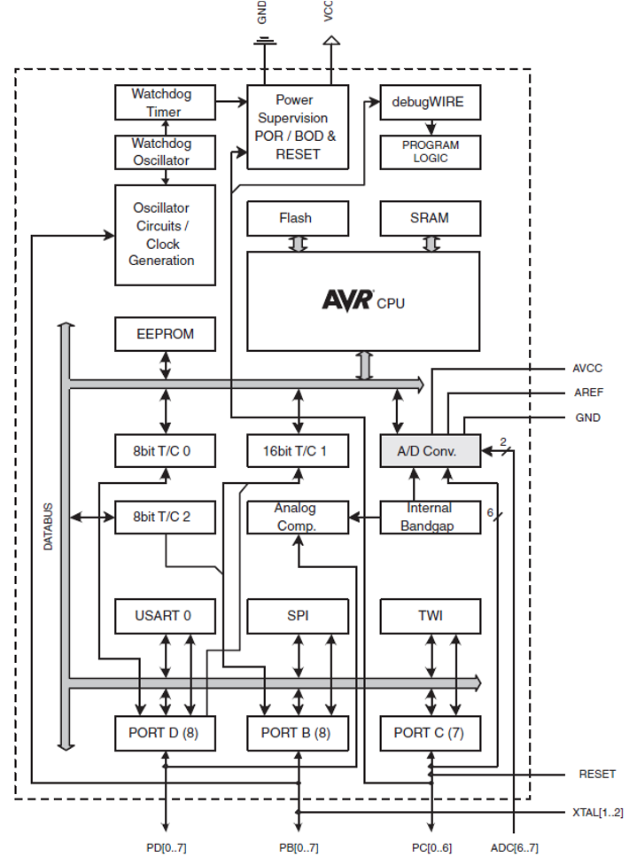
Fig. 27 Schematic diagram showing the I/O provided by the Atmel ATmega328 microcontroller#
MCU Inputs#
Consider a switch which on one side is connected to a 5V power source and on the other side to a microntroller input.
What voltage is read at the I/O port when the switch is closed and when it is open?
Pull Ups#
To get around this issue, microcontrollers use pull-up (or pull-down) circuitry to hold the port high (or low) (see Fig. 28).
{kind=link}
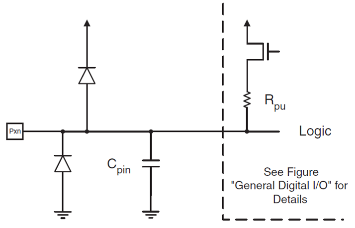
Fig. 28 Schematic of the pullup circuitry for the ATmega328 (from the manual).#
What voltage is read at the I/O port when the switch ‘S1’ is closed and when it is open now?
{kind=link}
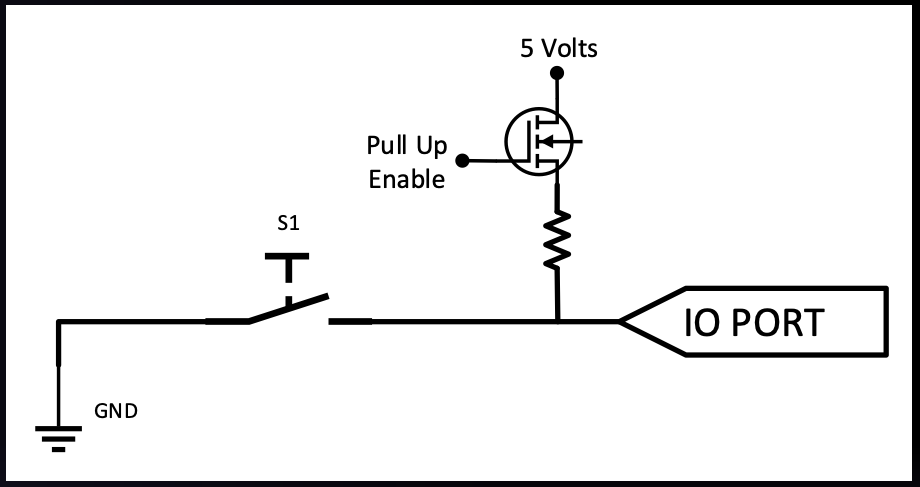
Ports as General Digital I/O#
{kind=link}
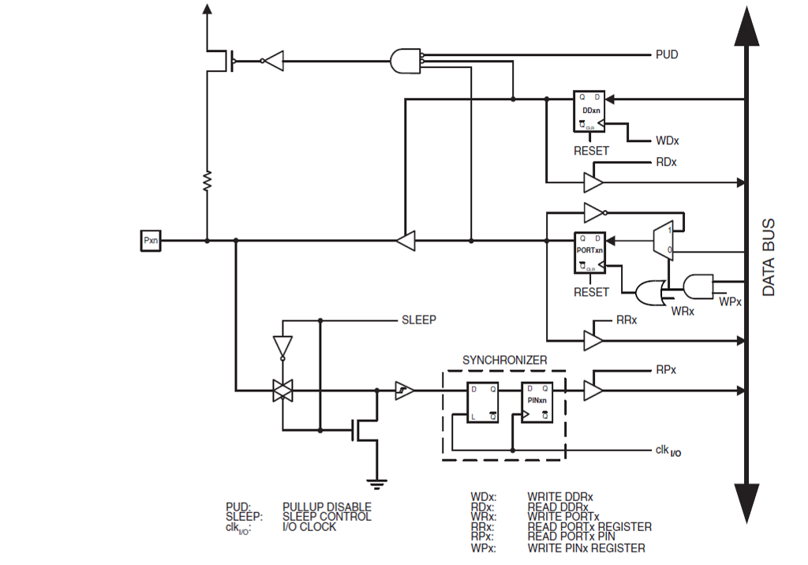
Fig. 29 The PORTC register#
The ports are bi-directional I/O ports with optional internal pull-ups meaning they can be configured to read an input such as a switch or a sensor or to write to an output such as an LED or control an actuator. Fig. 29 shows a functional description of one I/O-port pin, which we give the notation Pxn.
Configuring a pin#
{kind=link}
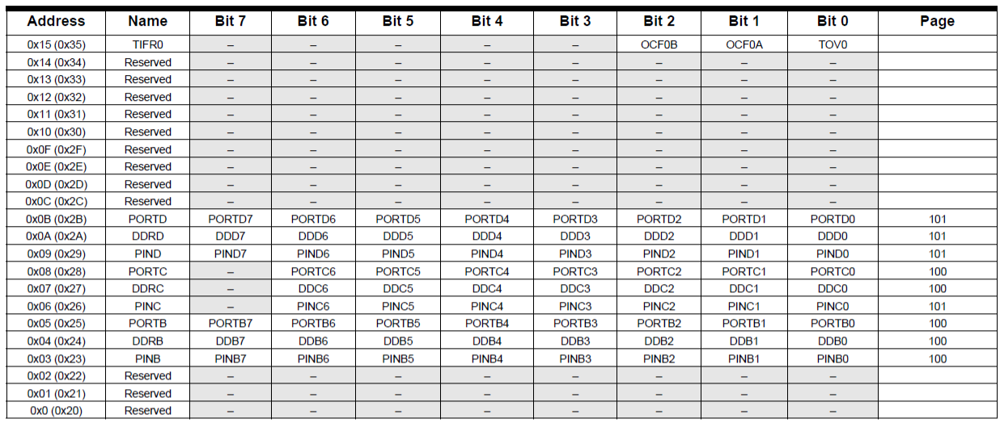
Fig. 30 A portion of the memory map of the Atmel ATmega328 showing the location of the I/O registers.#
Recall the 64 I/O registers early on in the user data space (see Fig. 30):
General purpose registers –
0x0000–0x001FThree I/O memory address locations are allocated for each port, one each for:
the Data Registers –
PORTx,the Data Direction Register –
DDRx, andthe Port Input Pins –
PINx
Note: x refers to the numbering letter for the port (B, C, or D in our case).e)
Configuring a Pin - Data Direction#
The DDxn bit in the DDRx Register (illustrated for DDRB in Fig. 31) selects the data direction (input or output) of this pin.
{kind=link}
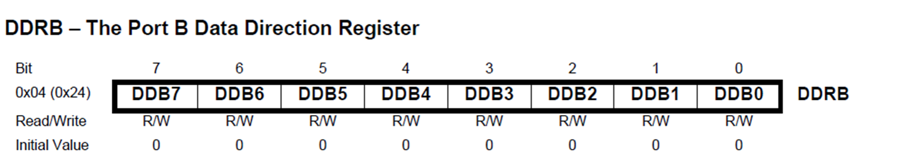
Fig. 31 DDRB - The port B data direction register.#
Writing logic one to
DDxn,PORTxnis configured as an output pin.Writing logic zero to
DDxn,PORTxnis configured as an input pin. .
Writing to a Pin - Output#
The Pxn bit in the PORTx Register (illustrated for PORTC in Fig. 32) has two purposes dependent on the condition of the corresponding bit in the DDRx register.
{kind=link}
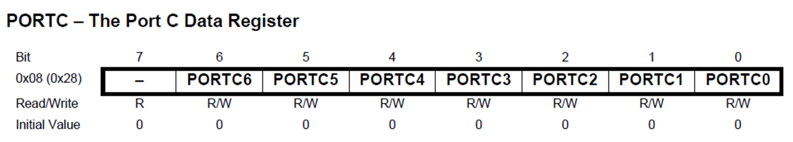
Fig. 32 PORTC - the port C data register#
If the DDRx bit is configured as an output:
Writing logic one to
PORTxndrives the pin high (on-state).Writing logic zero to
PORTxnto logic zero drives the pin low (off-state).
Reading from a Pin - Input#
The port pin can be read through the PINxn Register bit (illustrated for PINB in Fig. 33.
{kind=link}
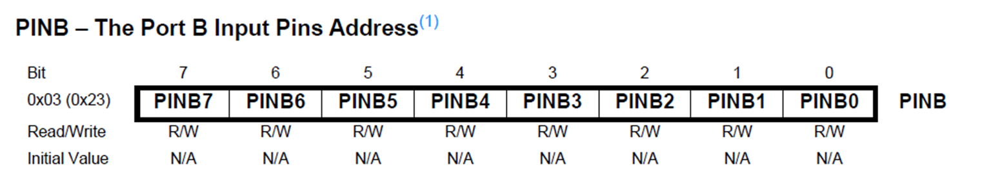
Fig. 33 PINB - the port B input pins address#
This is independent of the setting of Data Direction bit DDxn, however is good practice to have it set.
Writing a logic one to PINxn toggles the value of PORTxn, independent on the value of DDRxn.
Configuring a Pin - Pull Up Enable#
Providing a port is configured as an input.
If
PORTxnis written logic one when the pin is configured as an input pin, the pull-up resistor is activated.To switch the pull-up resistor off,
PORTxnhas to be written logic zero or the pin has to be configured as an output pin.
Basic I/O Demonstration#
{kind=link}
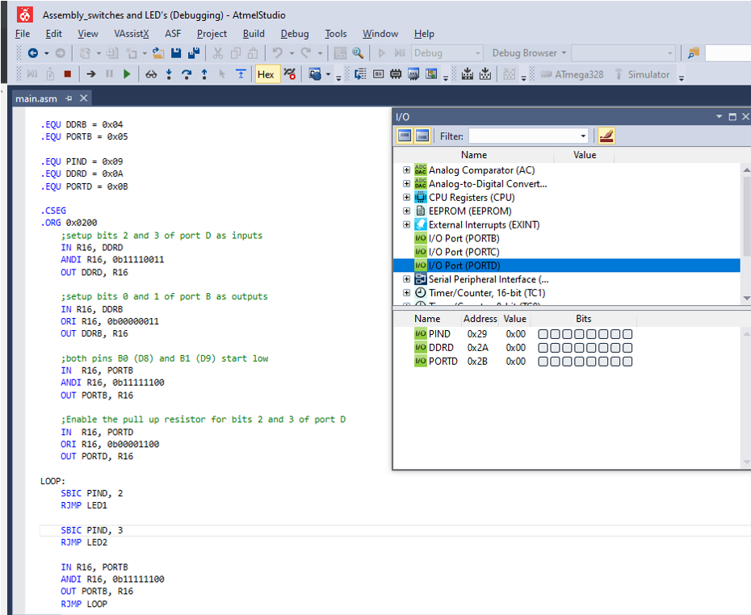
Summary#
In this chapter we have:
Introduced a few more parts of the AVR core, namely, the status register, program counter and stack pointer and how these are used under normal operation
Started to look at I/O on a microcontroller including the concept of pull up resistors as well as some of the specific registers used in the AVR core to enable the use of both input and output device
On Canvas#
Canvas module Week 2: Microcontroller Architecture and I/O, along with these notes, there is some additional self study material on canvas on page Week 2: Atmel ATmega328 Architecture Overview. This includes a video demonstration, from my former colleague Ben Clifford, of the various topics discussed in this session.
There is also a quiz on Microcontroller Architecture.